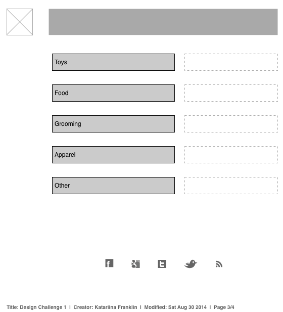

Which two websites are you most inspired by?
Whistle
FitBit
How do they exhibit effective use of space, size or balance?
Whistle
The Whistle website is based on a very simple design. Large portion of the home page is based on negative space that is used effectively to bring the visitor's focus to the main call to action. The call to action itself maintains a consistency throughout the site with the user of color whereby the visitor easily recognizes the familiar color. When the user scrolls below the fold, simple graphics and balance is used to explain the product in question; again, ample negative space is used to simplify the design.
The design is very simple and effective; I don't think further reexamination of the design is needed.
FitBit
Most of the home page is taken up by a scrolling designhighlighting new products and product features. The design takes advantage of negative space as well as energetic colors and designs that draw the visitor's eye to the call to action. Consistent color is used to help the visitor identify the call to action no matter where they are on the page.
The prominent scrolling feature on the home page can be distracting and annoying to some visitors. This aspect of the design could be reexamined to potentially develop a calmer design.
What makes them similar and different?
Both sites use ample negative space with very clear design features making it easy for the visitor to recognize the call to action. More information is crammed into the FitBit home page creating a busier looking site and forcing the visitor to work a bit harder to find the key information.
Thumbnail sketches
- Home page: Option 1
The first option for the home page places large emphasis on the hero image and only secondarily brings the visitor focus to the links.

- Home page: Option 2
The second option of the home page brings maintains a relatively prominent image but brings the site content areas to a more prominent area of the page.

- Content page: Option 1
The first option of the content page gives equal prominence to all sub-pages while maintaining the site branding in the header.

- Content page: Option 2
The second option of the content page features a prominent add for a product or products that the user will initially focus. Site branding and navigation are maintained.